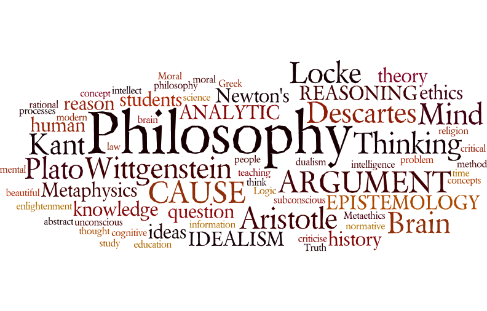

PHIL 1504: Language and Logic
Dr. Ted Parent
In language and logic, I have learned how to comprehensively break down and discuss different type of arguments, while analyzing the sentence structure to deduce complex reasoning. While this may seem like fairly complicated subject matter, for the most part, the analysis is fairly straight forward. It gives a truly unique perspective on the art of human communication and interaction. It is a very good non communications class for communication majors to take as it helps a person to strategically create various arguments using different reasoning. This analysis can go even farther and continue to form coherent argumentative thought in the professional world. Professor Parent has taught several philosophy classes for many years now and continues to enjoy to his job educating students at Virginia Tech.
